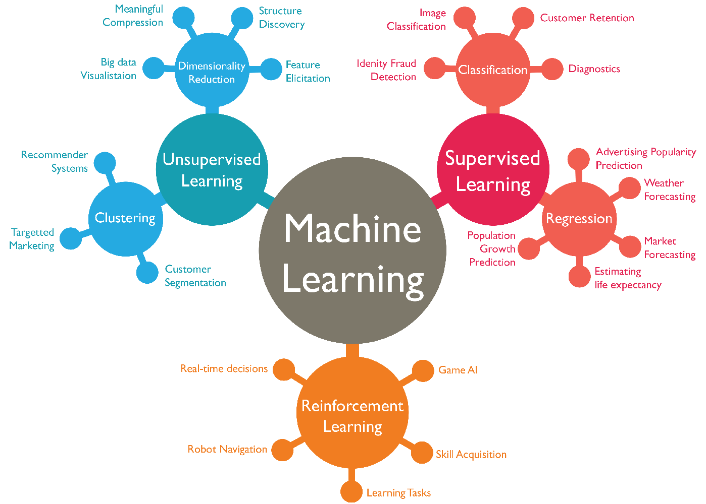
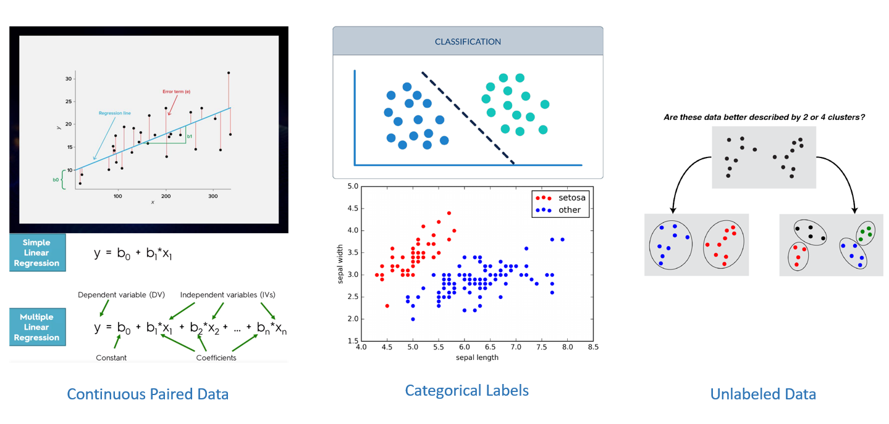
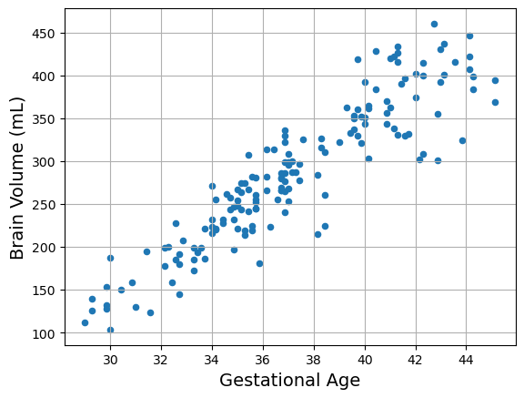
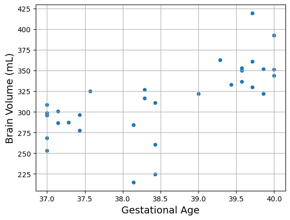
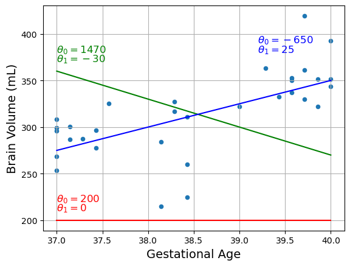
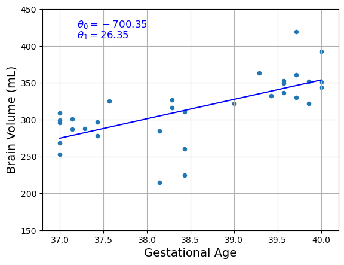
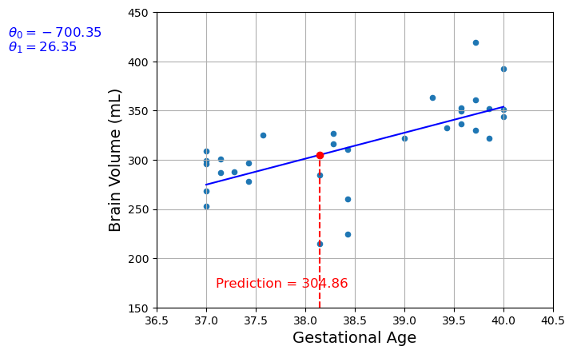
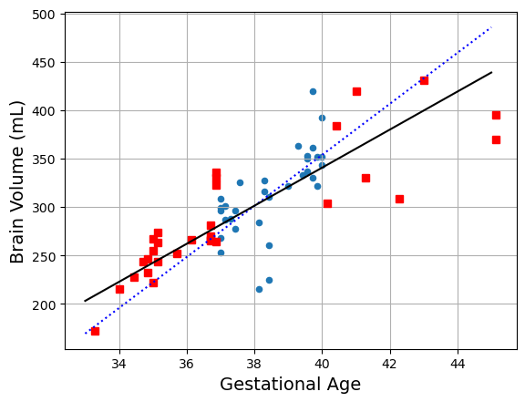
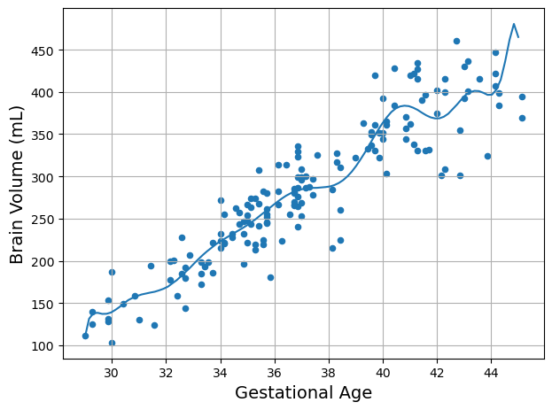

Fundamentos del Aprendizaje Automático#
El aprendizaje automático consiste en ajustar modelos matemáticos a los datos para extraer información o hacer predicciones.
“[El aprendizaje automático es el] campo de estudio que otorga a los ordenadores la capacidad de aprender sin ser programados explícitamente.”
—Arthur Samuel, 1959
Estos modelos funcionan tomando características (features) como entradas. Una característica es una representación numérica de algún aspecto de los datos en bruto. Las características actúan como intermediarias entre los datos crudos y los modelos de aprendizaje automático dentro de la canalización completa.
El aprendizaje automático es útil para:
Problemas en los que las soluciones existentes requieren mucho ajuste manual y reglas complejas; un algoritmo de Aprendizaje Automático puede simplificar el código y rendir mejor.
Problemas complejos para los que no existe una buena solución programando reglas explícitas; los mejores métodos de Aprendizaje Automático pueden encontrar una solución.
Entornos cambiantes: un sistema de Aprendizaje Automático puede adaptarse a datos nuevos.
Obtener información sobre problemas complejos y grandes volúmenes de datos.
Conceptos fundamentales del aprendizaje automático#
Datos: Los datos son observaciones de fenómenos del mundo real. Cada conjunto de datos puede contener errores, valores atípicos y ruido, por lo que suele ser esencial limpiarlos y procesarlos antes de analizarlos.
Modelos: Un modelo es una abstracción matemática que describe la relación entre las características de entrada y las salidas. Su objetivo es generalizar: aprender de observaciones pasadas para predecir o inferir resultados en datos nuevos.
Características (features): Una característica es una representación numérica derivada de los datos brutos. Las buenas características son informativas, relevantes para la tarea y adecuadas a la arquitectura del modelo.
Ingeniería de características (feature engineering): proceso de extraer y transformar variables a partir de datos brutos para mejorar el rendimiento del modelo, lo que a menudo conduce a predicciones más precisas y un mejor desempeño general.
Pasos principales de la canalización (pipeline) de aprendizaje automático#
Mirar el panorama general.
Obtener los datos.
Explorar y visualizar los datos para extraer información.
Preparar los datos para los algoritmos de Aprendizaje Automático.
Seleccionar un modelo y entrenarlo.
Ajustar los hiperparámetros y validar el modelo.
Evaluar el modelo final y ponerlo en producción.
Representación matemática#
En todas las tareas de aprendizaje automático, una muestra se caracteriza por un vector de características de dimensión \(D\):
Buscamos encontrar un modelo matemático para predecir salidas que pueda expresarse como una función \(f\):
Considerando múltiples muestras, denotaremos el vector de características de la muestra \(i\) como:
where \(\hat{y}\) is an output estimated by our model. In the case of regression it is an estimated target value, for classification and clustering it is an estimated label, and for dimensionality reduction it is a transformed feature vector. Let’s assume that we have N training samples with feature vectors \(\mathbf{x}_1, ...,\mathbf{x}_N\) defined as follows:
Las características de las muestras de entrenamiento determinan una matriz de características \(\mathbf{X}\) con dimensiones \(N \times D\): las filas corresponden a muestras y las columnas a características. En aprendizaje supervisado esperamos una salida \(\mathbf{y}_i\) para cada muestra \(\mathbf{x}_i\). Esto define el vector objetivo para regresión y el vector de etiquetas para clasificación:
Para encontrar el modelo matemático \(f\), debemos seleccionar su forma, que varía según el algoritmo. En general, elegimos por adelantado una forma matemática para la función \(f\) que depende del vector de características \(\mathbf{x}\) y del vector de parámetros \(\theta\):
Entrenar el modelo \(f\) puede expresarse matemáticamente como encontrar el vector de parámetros \(\hat{\theta}\) que minimiza una función de pérdida \(\mathbf{F}\) para el conjunto de entrenamiento dado:
donde \(\mathbf{y}\) desaparece de la ecuación en tareas no supervisadas.
Tipos de Aprendizaje Automático#
Existen tres tipos clave: aprendizaje supervisado, aprendizaje no supervisado y aprendizaje por refuerzo.

Regresión, Clasificación y Clustering#
En el ámbito biomédico, regresión, clasificación y agrupamiento (clustering) cubren la mayoría de problemas relacionados con análisis de datos, diagnóstico e investigación.

Regresión#
En las tareas de regresión, el objetivo es predecir un resultado numérico continuo a partir de diversas características de entrada. Por ejemplo, en un contexto médico, se podría usar regresión para predecir la presión arterial de un paciente en función de variables como la edad, el peso, los hábitos de tabaquismo y los antecedentes familiares. El modelo aprende cómo estos factores influyen en el valor objetivo, que es el nivel de presión arterial, y predice un valor específico para un nuevo paciente.
Otra aplicación común está en la farmacocinética, donde los modelos de regresión ayudan a estimar los niveles de concentración de un fármaco en el torrente sanguíneo a lo largo del tiempo. Al introducir variables específicas del paciente como la dosis, la tasa de metabolismo y la función renal, el modelo predice la concentración del medicamento en un momento dado.
La regresión produce números reales, lo que la hace adecuada para problemas en los que se necesitan predicciones numéricas precisas en entornos médicos, como predecir tiempos de recuperación o estimar tasas de progresión de enfermedades.
Clasificación#
La clasificación, en cambio, se centra en predecir resultados categóricos. En el campo médico, esto suele implicar el diagnóstico de enfermedades. Por ejemplo, un modelo podría clasificar a los pacientes como diabéticos o no diabéticos en función de datos de entrada como los niveles de glucosa en sangre, el IMC y los factores genéticos. A cada paciente se le asigna una etiqueta, ya sea “diabético” o “no diabético”, según las características proporcionadas.
Otra aplicación es la detección de cáncer mediante imágenes. Un modelo de clasificación podría analizar imágenes de biopsias o tomografías para determinar si un tumor es benigno o maligno. En este caso, el objetivo del modelo es asignar la imagen a una de dos categorías: “benigno” o “maligno”.
A diferencia de la regresión, donde la salida es un valor continuo, la clasificación predice una etiqueta discreta. Esto es muy valioso en el diagnóstico médico, donde se necesitan decisiones claras, como “positivo” o “negativo” para una enfermedad en particular, para planificar un tratamiento.
Clustering (Agrupamiento)#
El clustering se utiliza normalmente para análisis exploratorio, donde el objetivo es descubrir patrones ocultos o grupos en los datos sin etiquetas predefinidas. En biomedicina, el clustering suele emplearse para agrupar pacientes en función de información genética o síntomas clínicos. Por ejemplo, los investigadores pueden agrupar pacientes con perfiles de expresión génica similares para identificar subtipos de cáncer que responden de manera diferente al tratamiento.
En otro caso, el clustering podría ayudar a segmentar a los pacientes en función de la progresión de una enfermedad como el Alzheimer. Al agrupar pacientes en clústeres que muestran patrones similares de deterioro cognitivo, los médicos pueden adaptar mejor las estrategias de tratamiento o incluso descubrir nuevos subtipos de la enfermedad.
El clustering no implica categorías predefinidas. En su lugar, encuentra estructuras inherentes en los datos, lo que lo hace especialmente útil en campos como la genómica o la medicina personalizada, donde comprender las relaciones ocultas entre los datos puede conducir a descubrimientos significativos.
Diferencias clave:#
En aplicaciones biomédicas, la distinción fundamental entre estos métodos radica en sus objetivos:
Regresión predice valores continuos, como la presión arterial o las concentraciones de fármacos.
Clasificación predice resultados categóricos, como diagnosticar una enfermedad o clasificar un tumor como benigno o maligno.
Clustering descubre agrupaciones naturales en los datos, como identificar subtipos de pacientes en función de marcadores genéticos o de la progresión de una enfermedad.
Cada método cumple un propósito distinto, pero es fundamental para avanzar en el diagnóstico, el tratamiento y la investigación médica.
Ejemplo de regresión: volúmenes cerebrales neonatales#
# This project requires Python 3.7 or above:
import sys
assert sys.version_info >= (3, 7)
# Scikit-Learn ≥1.0.1 is required:
from packaging import version
import sklearn
assert version.parse(sklearn.__version__) >= version.parse("1.0.1")
import pandas as pd
from sklearn.linear_model import LinearRegression
# Plot setup
import matplotlib.pyplot as plt
plt.rc('font', size=12)
plt.rc('axes', labelsize=14, titlesize=14)
plt.rc('legend', fontsize=12)
plt.rc('xtick', labelsize=10)
plt.rc('ytick', labelsize=10)
# Make this notebook's output stable across runs:
import numpy as np
np.random.seed(42)
Cargar los datos#
# Download and prepare the data
data_root = "datasets\\ch1\\neonatal_brain_volumes.csv"
nbv = pd.read_csv(data_root)
X = nbv[["GA"]].values
y = nbv[["brain volume"]].values
# Visualize the data
nbv.plot(kind='scatter', grid=True,
y="brain volume", x="GA",
ylabel="Brain Volume (mL)", xlabel="Gestational Age")
plt.show()

Seleccionar y entrenar el modelo#
# Select a linear model
model = LinearRegression()
# Train the model
model.fit(X, y)
# Make a prediction
X_new = [[37]]
print(model.predict(X_new))
[[281.66202738]]
Sustituir el modelo de Regresión Lineal por k-Vecinos más Cercanos en el código anterior es tan simple como reemplazar estas líneas:
from sklearn.linear_model import LinearRegression
model = LinearRegression()
por estas otras:
from sklearn.neighbors import KNeighborsRegressor
model = KNeighborsRegressor(n_neighbors=3)
# Select a 3-Nearest Neighbors regression model
from sklearn.neighbors import KNeighborsRegressor
model = KNeighborsRegressor(n_neighbors=3)
# Train the model
model.fit(X, y)
# Make a prediction for Cyprus
print(model.predict(X_new)) # outputs [[6.33333333]]
[[272.57333333]]
# Create a function to save the figures:
from pathlib import Path
# Where to save the figures
IMAGES_PATH = Path() / "images" / "fundamentals"
IMAGES_PATH.mkdir(parents=True, exist_ok=True)
def save_fig(fig_id, tight_layout=True, fig_extension="png", resolution=300):
path = IMAGES_PATH / f"{fig_id}.{fig_extension}"
if tight_layout:
plt.tight_layout()
plt.savefig(path, format=fig_extension, dpi=resolution)
Para ilustrar el riesgo de sobreajuste (overfitting), usamos solo una parte de los datos de entrenamiento, ajustamos varios modelos y mostramos que no siguen la misma tendencia lineal.
min_ga = 37
max_ga = 40
stats = nbv[(nbv["GA"] >= min_ga) & (nbv["GA"] <= max_ga)]
stats.head()
| GA | brain volume | |
|---|---|---|
| 1 | 37.429 | 277.73 |
| 8 | 37.000 | 268.49 |
| 9 | 37.000 | 296.00 |
| 10 | 37.000 | 253.23 |
| 24 | 37.286 | 287.60 |
Representemos algunos datos aleatorios.
Show code cell source
stats.plot(kind='scatter', grid=True,
y="brain volume", x="GA",
ylabel="Brain Volume (mL)", xlabel="Gestational Age")
plt.show()

Selección de modelo: un modelo lineal simple#
Brain Volume = \(\theta_0 + \theta_1 \times\) GA
Este modelo es solo una función lineal de la característica de entrada GA. Los parámetros del modelo son \(\theta_0\) y \(\theta_1\).
Más en general, un modelo lineal realiza la predicción como una combinación lineal de las características, más una constante llamada término independiente (o bias):
o sea:
Show code cell source
stats.plot(kind='scatter', grid=True,
y="brain volume", x="GA",
ylabel="Brain Volume (mL)", xlabel="Gestational Age")
X = np.linspace(min_ga, max_ga, 100)
w1, w2 = 200, 0
plt.plot(X, w1 + w2 * X, "r")
plt.text(37, 220, fr"$\theta_0 = {w1}$", color="r")
plt.text(37, 210, fr"$\theta_1 = {w2}$", color="r")
w1, w2 = 1470, -30
plt.plot(X, w1 + w2 * X, "g")
plt.text(37, 380, fr"$\theta_0 = {w1}$", color="g")
plt.text(37, 370, fr"$\theta_1 = {w2}$", color="g")
w1, w2 = -650, 25
plt.plot(X, w1 + w2 * X, "b")
plt.text(39.2, 390, fr"$\theta_0 = {w1}$", color="b")
plt.text(39.2, 380, fr"$\theta_1 = {w2}$", color="b")
plt.show()

Ahora bien, ¿cómo entrenamos el modelo?
Entrenar un modelo significa fijar sus parámetros de modo que se ajuste lo mejor posible al conjunto de entrenamiento.
Para ello, primero necesitamos una medida de qué tan bien (o mal) el modelo se ajusta a los datos. La métrica más común en regresión es el Error Cuadrático Medio (MSE). Así, para entrenar una Regresión Lineal, hay que encontrar el valor de \(\theta\) que minimiza el MSE.
El MSE de una hipótesis de Regresión Lineal \(h_\theta\) sobre un conjunto de entrenamiento \(\mathbf{X}\) se calcula como:
La distribución normal y la pérdida cuadrática#
Podemos dar una motivación más formal al objetivo de la pérdida cuadrática haciendo suposiciones probabilísticas sobre la distribución del ruido.
Para empezar, recordemos que una distribución normal con media \(\mu\) y varianza \(\sigma^2\) se define como:
\(p(x) = \frac{1}{\sqrt{2 \pi \sigma^2}} \exp\left(-\frac{1}{2 \sigma^2} (x - \mu)^2\right).\)
Una forma de motivar la regresión lineal con pérdida cuadrática es asumir que las observaciones provienen de mediciones ruidosas, donde el ruido \(\epsilon\) sigue una distribución normal \(\mathcal{N}(0, \sigma^2)\):
\(y = \theta^\top \mathbf{x} + \epsilon \textrm{ donde } \epsilon \sim \mathcal{N}(0, \sigma^2).\)
Así, podemos escribir la verosimilitud de observar un valor \(y\) dado un \(\mathbf{x}\) como
\( P(y \mid \mathbf{x}) = \frac{1}{\sqrt{2 \pi \sigma^2}} \exp\left(-\frac{1}{2 \sigma^2} (y - \theta^\top \mathbf{x})^2\right).\)
La verosimilitud se factoriza. Según el principio de máxima verosimilitud, los mejores valores de los parámetros \(\mathbf{w}\) y \(b\) son aquellos que maximizan la verosimilitud de todo el conjunto de datos:
\(P(\mathbf y \mid \mathbf X) = \prod_{i=1}^{n} p(y^{(i)} \mid \mathbf{x}^{(i)}).\)
La igualdad se cumple porque todos los pares \((\mathbf{x}^{(i)}, y^{(i)})\) se extrajeron de manera independiente unos de otros. Los estimadores obtenidos siguiendo el principio de máxima verosimilitud se llaman estimadores de máxima verosimilitud. Aunque maximizar el producto de muchas funciones exponenciales parece difícil, podemos simplificarlo significativamente, sin cambiar el objetivo, maximizando el logaritmo de la verosimilitud en su lugar.
Por razones históricas, las optimizaciones se suelen expresar como problemas de minimización en lugar de maximización. Así, sin cambiar nada, podemos minimizar la log-verosimilitud negativa, que se expresa como:
\(-\log P(\mathbf y \mid \mathbf X) = \sum_{i=1}^n \frac{1}{2} \log(2 \pi \sigma^2) + \frac{1}{2 \sigma^2} \left(y^{(i)} - \theta^\top \mathbf{x}^{(i)} \right)^2.\)
Si asumimos que \(\sigma\) es fijo, podemos ignorar el primer término, ya que no depende de \(\mathbf{w}\) ni de \(b\). El segundo término es idéntico a la pérdida cuadrática presentada antes, salvo por la constante multiplicativa \(\frac{1}{\sigma^2}\). Afortunadamente, la solución tampoco depende de \(\sigma\).
Se concluye que minimizar el error cuadrático medio es equivalente a la estimación de máxima verosimilitud de un modelo lineal bajo la suposición de ruido gaussiano aditivo.
La Ecuación Normal#
Para encontrar el valor de $\theta$ que minimiza la función de coste, existe una solución en forma cerrada —es decir, una ecuación matemática que da directamente el resultado.
Esto se llama la Ecuación Normal:
La ecuación normal puede calcularse usando el módulo de Álgebra Lineal de NumPy (np.linalg):
theta_best = np.linalg.inv(X_b.T @ X_b) @ X_b.T @ y
Sin embargo, la complejidad computacional de invertir una matriz de este tipo suele ser de aproximadamente $O(n^{2.4})$ a $O(n^3)$ (dependiendo de la implementación).
En otras palabras, si duplicas el número de características, multiplicas el tiempo de cómputo aproximadamente por $2^{2.4} = 5.3$ a $2^3 = 8$.
En su lugar, el enfoque usado por la clase LinearRegression de scikit-learn es de alrededor de $O(n^2)$.
Si duplicas el número de características, multiplicas el tiempo de cómputo aproximadamente por 4.
Minimización por Mínimos Cuadrados#
La clase LinearRegression se basa en la función scipy.linalg.lstsq().
Esta función calcula \(\mathbf{\hat\theta} = \mathbf{X}^\dagger \mathbf{y}\), donde \(\mathbf{X}^\dagger\) es la pseudoinversa de \(\mathbf{X}\).
La pseudoinversa se calcula mediante una técnica estándar de factorización matricial llamada Descomposición en Valores Singulares (SVD).
Este enfoque es más eficiente que calcular la Ecuación Normal, además de que gestiona bien casos límite. De hecho, la Ecuación Normal puede fallar si la matriz \(\mathbf{X}^T \mathbf{X}\) no es invertible, pero la pseudoinversa siempre está definida.
from sklearn import linear_model
y_sample = stats[["brain volume"]].values
X_sample = stats[["GA"]].values
lin1 = linear_model.LinearRegression()
lin1.fit(X_sample, y_sample)
t0, t1 = lin1.intercept_[0], lin1.coef_[0][0]
print(f"θ0={t0:.2f}, θ1={t1:.2e}")
θ0=-700.35, θ1=2.64e+01
Show code cell source
stats.plot(kind='scatter', grid=True,
y="brain volume", x="GA",
ylabel="Brain Volume (mL)", xlabel="Gestational Age")
X = np.linspace(min_ga, max_ga, 1000)
plt.plot(X, t0 + t1 * X, "b")
min_bv = 150
max_bv = 450
plt.text(37.2, max_bv - 25,
fr"$\theta_0 = {t0:.2f}$", color="b")
plt.text(37.2, max_bv -40,
fr"$\theta_1 = {t1:.2f}$", color="b")
plt.axis([min_ga-.2, max_ga+.2, min_bv, max_bv])
plt.show()

example_ga = stats["GA"].loc[56]
example_ga
38.143
example_prediction = lin1.predict([[example_ga]])[0, 0]
example_prediction
304.8594393021576
Show code cell source
stats.plot(kind='scatter', grid=True,
y="brain volume", x="GA",
ylabel="Brain Volume (mL)", xlabel="Gestational Age")
X = np.linspace(min_ga, max_ga, 1000)
plt.plot(X, t0 + t1 * X, "b")
min_bv = 150
max_bv = 450
plt.text(35, max_bv - 25,
fr"$\theta_0 = {t0:.2f}$", color="b")
plt.text(35, max_bv -40,
fr"$\theta_1 = {t1:.2f}$", color="b")
plt.plot([example_ga, example_ga],
[min_bv, example_prediction], "r--")
plt.text(37.1, 170,
fr"Prediction = {example_prediction:.2f}", color="r")
plt.plot(example_ga, example_prediction, "ro")
plt.axis([min_ga-.5, max_ga+.5, min_bv, max_bv])
plt.show()

nbv["brain volume"].loc[10]
253.23
Principales desafíos en aprendizaje automático#
Cantidad de datos de entrenamiento y validación cruzada#
La mayoría de algoritmos de Aprendizaje Automático requieren muchos datos para funcionar correctamente. Incluso para problemas sencillos suelen necesitarse miles de ejemplos; para tareas como reconocimiento de imágenes o voz, millones.
Además, para generalizar bien es crucial que los datos de entrenamiento sean representativos de los nuevos casos a los que se quiere generalizar.
missing_data = nbv[(nbv["GA"] < min_ga) |
(nbv["GA"] > max_ga)]
missing_data
| GA | brain volume | |
|---|---|---|
| 0 | 35.714 | 252.41 |
| 2 | 36.143 | 266.36 |
| 3 | 36.714 | 266.13 |
| 4 | 42.286 | 308.35 |
| 5 | 40.143 | 303.76 |
| ... | ... | ... |
| 157 | 40.857 | 344.04 |
| 158 | 34.857 | 196.40 |
| 159 | 34.429 | 232.43 |
| 160 | 40.429 | 428.26 |
| 161 | 35.429 | 307.99 |
130 rows × 2 columns
Por ejemplo, el conjunto que usamos antes para entrenar el modelo lineal no era perfectamente representativo; faltaban algunos valores. …
Ahora, si permitimos que \(\theta_1\) varíe pero aplicamos regularización para penalizar grandes valores de \(\theta_1\), el modelo se vuelve más simple (menos grados de libertad). La idea clave es evitar que el modelo siga de cerca el ruido.
Show code cell source
stats.plot(kind='scatter', grid=True,
y="brain volume", x="GA",
ylabel="Brain Volume (mL)", xlabel="Gestational Age")
pos_data_x, pos_data_y = missing_data.iloc[:30, 0], missing_data.iloc[:30, 1]
plt.plot(pos_data_x, pos_data_y, "rs")
X = np.linspace(33, 45, 100)
plt.plot(X, t0 + t1 * X, "b:")
lin_reg_full = linear_model.LinearRegression()
Xfull = np.c_[nbv["GA"]]
yfull = np.c_[nbv["brain volume"]]
lin_reg_full.fit(Xfull, yfull)
t0full, t1full = lin_reg_full.intercept_[0], lin_reg_full.coef_[0][0]
plt.plot(X, t0full + t1full * X, "k")
# plt.axis([0, 115_000, min_life_sat, max_life_sat])
plt.show()

Añadir unos pocos datos faltantes puede alterar significativamente la relación observada.
En aplicaciones biomédicas solemos trabajar con conjuntos de datos pequeños para entrenar. En este escenario, excluir dos conjuntos (validación y prueba) es costoso.
La validación cruzada proporciona un solución a este problema: primero apartamos un conjunto de prueba como antes, pero en lugar de reservar también un conjunto de validación fijo, dividimos los datos restantes en k grupos (folds). Entrenamos k veces, de forma que cada fold actúa como validación una única vez y los k − 1 restantes forman el entrenamiento. Probamos diferentes hiperparámetros y elegimos los que mejor rendimiento promedio obtienen en los k folds de validación. Luego entrenamos el modelo final con todos los k folds y evaluamos el rendimiento final en el conjunto de prueba, nunca usado en la selección de hiperparámetros.
Datos de mala calidad#
Si los datos de entrenamiento están llenos de errores, valores atípicos y ruido (por ejemplo, por medidas de mala calidad), al sistema le costará más detectar los patrones subyacentes y su rendimiento bajará. Suele merecer la pena dedicar tiempo a limpiar los datos. Por ejemplo:
Si algunas instancias son claramente atípicas, puede ayudar descartarlas o corregir los errores manualmente.
Si a algunas instancias les faltan ciertas características (p. ej., un 5% de clientes no indicó su edad), decide si ignorar ese atributo por completo, ignorar esas instancias, imputar los valores que faltan (p. ej., con la mediana) o entrenar un modelo con la característica y otro sin ella, etc.
Características irrelevantes#
Basura que entra, basura que sale. Un modelo no puede aprender correctamente si le alimentas con características poco informativas o irrelevantes. La selección y construcción de características es crucial: eliminar variables redundantes, transformar variables (escalado, codificación), o crear nuevas características a partir de datos adicionales puede mejorar mucho el rendimiento.
Sobreajuste del conjunto de entrenamiento#
El sobreajuste (overfitting) ocurre cuando el modelo es demasiado complejo en relación con la cantidad de datos y su nivel de ruido. En ese caso el modelo aprende peculiaridades del conjunto de entrenamiento y no generaliza bien a datos nuevos.
Show code cell source
from sklearn import preprocessing
from sklearn import pipeline
nbv.plot(kind='scatter', grid=True,
y="brain volume", x="GA",
ylabel="Brain Volume (mL)", xlabel="Gestational Age")
poly = preprocessing.PolynomialFeatures(degree=20, include_bias=False)
scaler = preprocessing.StandardScaler()
lin_reg2 = linear_model.LinearRegression()
X = np.linspace(29, 45, 100)
pipeline_reg = pipeline.Pipeline([
('poly', poly),
('scal', scaler),
('lin', lin_reg2)])
pipeline_reg.fit(Xfull, yfull)
curve = pipeline_reg.predict(X[:, np.newaxis])
plt.plot(X, curve)
# plt.axis([0, 115_000, min_life_sat, max_life_sat])
save_fig('overfitting_model_plot')
plt.show()

Las posibles soluciones son:
Simplificar el modelo, seleccionando uno con menos parámetros (por ejemplo, lineal en lugar de un polinomio de alto grado), reduciendo el número de atributos o imponiendo restricciones (regularización).
Obtener más datos de entrenamiento.
Reducir el ruido en los datos de entrenamiento (p. ej., corregir errores y eliminar valores atípicos).
Regularización del modelo#
La regularización consiste en imponer restricciones al modelo para evitar que se ajuste demasiado a los datos de entrenamiento, capturando el ruido en lugar del patrón subyacente.
Considera el modelo lineal discutido antes, con dos parámetros \(\theta_0\) (intercepto) y \(\theta_1\) (pendiente). Si fijáramos \(\theta_1 = 0\), el modelo perdería la capacidad de ajustar la pendiente y solo podría ajustar el intercepto, dificultando capturar relaciones significativas.
Si permitimos que \(\theta_1\) varíe pero añadimos una penalización para valores grandes (p. ej., L2), obligamos al modelo a permanecer simple, de modo que pueda generalizar a datos no vistos.
Subajuste del conjunto de entrenamiento#
El subajuste (underfitting) ocurre cuando el modelo es demasiado simple para capturar la estructura subyacente de los datos: sus predicciones serán pobres incluso en entrenamiento.
Para afrontarlo:
Elige un modelo más potente (con más parámetros) que capture mayor complejidad.
Mejora la ingeniería de características, incorporando información más relevante o transformaciones que representen mejor los patrones.
Reduce las restricciones del modelo (p. ej., menos regularización) para darle más flexibilidad.